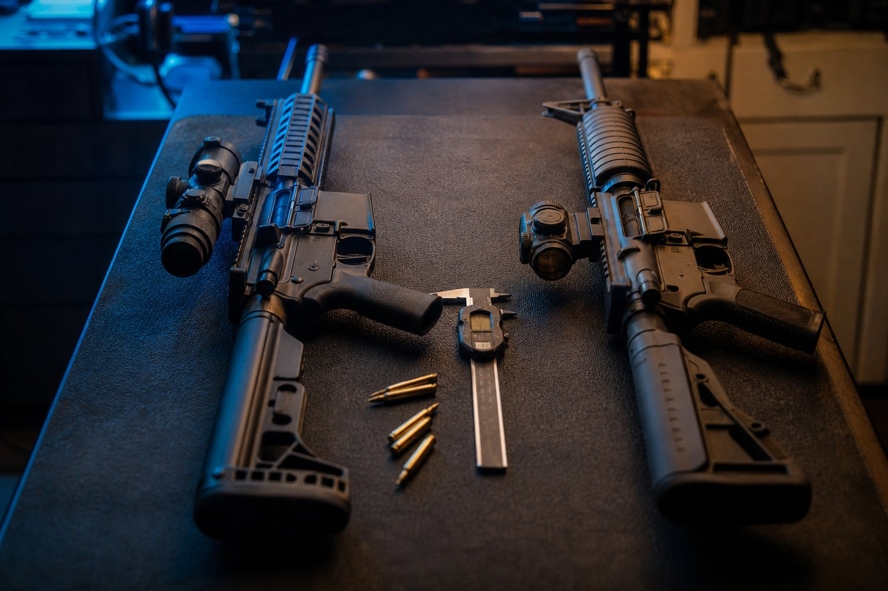
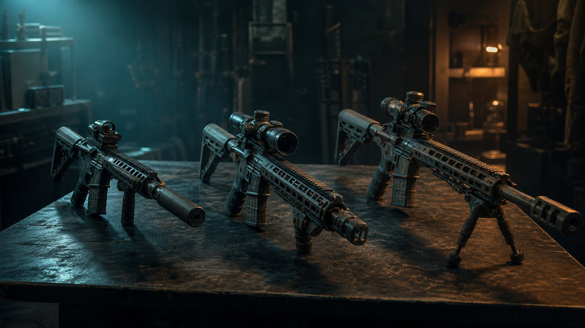

1. A545 « Utopia » — Le build S7 à tout faire
| Pièce | Recommandation |
|---|---|
| Munition | PPBS / 7N39 (T5-T6) — la seule raison d'exister de l'A545 |
| Muzzle | Compensateur vertical 5.45 |
| Poignée | Angled grip |
| Garde-main | Rail léger 5.45 |
| Optique | 1–4x ou 4x polyvalent |
| Chargeur | 45 coups rapide-con |
Coût total estimé : 450 000 – 600 000 K. Pour Lockdown/Forbidden. En Normal, passez T4-class et épargnez.
2. AK-12 « Laser Budget » — L'arme du stash maigre
- AK-12 + mun PS/7N38 + poignée angled + comp vertical — le spray le plus contrôlable du jeu.
- Coût ~250 000 K : le meilleur ratio coût/victoires du catalogue.
- Idéal pour climb Lockdown sans vider le stash.
3. Vector .45 « Infected Clear » — Le nétoyeur de hordes
- Vector .45 + Dum-Dum .45 ACP + red dot + 34/50 coups.
- ROI imbattable contre mutants S7 et body-unarmored lobbies.
- À 10 m, rien ne vit. À 25 m, fuyez.
4. M24 « Tribunal » — Le oneshot S7
- M24 + Ultra-Flesh / 7.62 AP + 10x + bipod déployable.
- Avec le buff headshot S7, un tir bien placé = un kil.
- Northridge et crêtes Airport uniquement. Valley = trop serré.
L'astuce du chargement en deux couches
La FAL revient en Saison 7 grâce à un kit de recul saisonnier appliqué au gunsmith, et avec elle une astuce de chargement qui vaut d'être connue parce qu'elle s'applique à toutes les armes à chargeur détaché.
Le principe : c'est la munition chambrée qui détermine la classe de pénétration au moment du tir. Un chargeur rempli de bouts bas de gamme peut donc être remplacé par une poignée de munitions haut de gamme, et la parade est de recharge.
- Les dix premières balles du chargeur en M80 (classe 4) ou M62 (classe 5) : le premier contact se fait avec la munition de qualité.
- Les vingt balles suivantes en M80 d'entrée de gamme : le coût de la munition de tête est amorti sur le reste du chargeur.
- Chargeur de 30 rounds et lunette compacte 2× : la configuration minimale du build.
Le statut de cette astuce. Elle est rapportée par la communauté des guides de Saison 7, et elle est cohérente avec la règle générale de la classe de pénétration. Elle reste une pratique de terrain, pas une règle officielle documentée par l'éditeur : la hiérarchie exacte des munitions d'un même calibre peut varier avec les correctifs.
La limite de l'astuce est évidente, et c'est elle qui la rend /ar opportuniste plutôt qu'exploit : dès que votre cible change de calibre, ou dès qu'un rechargement est nécessaire au milieu d'un échange, l'avantage disparaît. Elle est fait pour l'ouverture d'un duel, pas pour sa durée.
5. FAL « Forbidden Tribunal » — Le comeback du 7.62
- FAL + FAL Burst Kit S7 + Ultra-Flesh ou AP.
- Low-RPM discipliné : chaque balle est un verdict.
- Forbidden lobbies, T6+ targets : le shot-calling de l'arme la plus stylée de la saison.
Les cinq builds face aux chiffres de référence
Les valeurs ci-dessous proviennent d'une base de données de référence communautaire qui recoupe les données du jeu : classe de protection, durabilité, matériau, poids total du kit, pénalité de déplacement et nombre de tirs nécessaires au torse. Ce sont des valeurs documentées, pas des chiffres publiés par l'éditeur.
Build « tout-terrain » — AK-12 Assault Rifle en 5.45×39 BS
Un fusil de niveau supérieur, la munition la plus pénétrante de son calibre, et l'armure la plus élevée que le mode autorise. Il n'excelle nulle part et ne laisse aucun angle mort. C'est le build par défaut quand vous ne savez pas à qui vous avez affaire.
Build « assaut » — Vector 45 Micro SMG en .45 APWC
Haute cadence, portée courte, armure délibérément légère : le prix à payer en protection est compensé par la vitesse de déplacement.
| Emplacement | Pièce | Classe | Durabilité | Matériau |
|---|---|---|---|---|
| Torse | SEK Fortress Body Armor | 4 | 50 | Aluminium |
| Casque | 03 Heavy Tactical Helmet | 5 | 45 | Composite |
| Masque | Aucun | — | — | — |
Poids du kit : 11,0 kg · Pénalité de déplacement : −4 % · Contre une armure de classe 5 : percement seulement une fois la plaque usée, trois tirs au torse.
Build « longue distance » — M24 Bolt-Action en 7.62×51 M61
Le tir de précision le plus propre du catalogue. Il n'y a pas de rafale, donc chaque tir est une décision, et la décision vaut plus qu'un tir rapide mal placé.
| Emplacement | Normal (classe 4) | Lockdown (classe 5) |
|---|---|---|
| Torse | Spartan B Body Armor · classe 4 · durabilité 50 · aramide | BT6 Heavy Body Armor · classe 5 · durabilité 90 · titane |
| Casque | SH40 Military Helmet · classe 4 · durabilité 50 · acier | AN95 Heavy Blast Helmet · classe 5 · durabilité 55 · titane |
| Masque | SH60 Mask · classe 4 · durabilité 35 · composite | AN95 Military Bulletproof Mask · classe 4 · durabilité 50 · verre |
La comparaison des deux lignes est instructive : passer de Normal en Lockdown triple presque la durabilité du torse (50 → 90) en changeant de matériau. L'armidure en titane est bien plus résistante à l'usure que l'aramide, et cette différence se sent sur la durée d'un raid.
Build « léger » — P90 Micro SMG en 5.7×28 SS198
Le build le plus mobile du site. Il est conçu pour un objectif précis : ne pas chercher le combat, sortir vite, et rester en vie quand on vous engage par surprise.
| Emplacement | Pièce | Classe | Durabilité | Matériau |
|---|---|---|---|---|
| Torse | KN Regulation Body Armor | 3 | 35 | Aramide |
| Casque | F70 Tactical Helmet | 3 | 25 | Composite |
| Masque | Aucun | — | — | — |
Poids du kit : 9,1 kg · Pénalité de déplacement : −2 % · Contre une armure de classe 4 : percée à chaque fois, deux tirs au torse · Contre une armure de classe 5 : presque toujours, trois tirs au torse.
Build « anti-armure lourde » — SVTU Carbine en 7.62×54 7N37
Le 7.62×54 est le calibre le plus pénétrant du jeu, et la SVTU est l'arme qui l'exploite le mieux. En Normal, il est trop haut : sa portability est de 66 mètres, mais son ergonomie de 30 points en fait l'une des armes les moins maniables du catalogue. Ce build se justifie quand on sait que l'adversaire est en classe 5 ou 6 et que l'on refuse de négocier.
Le point commun des cinq builds : la cohérence. Dans chaque ligne, l'armure du torse, le casque et le masque portent le même niveau de défense. C'est cette homogénéité, et non le palier absolu, qui détermine si un kit tient un duel.
6. Chaque build face aux chiffres officiels
Les caractéristiques ci-dessous sont reprises du wiki officiel (modèle de données WeaponData). Elles permettent de vérifier si ce que les builds promettent tient la route — en particulier sur le recul, l'ergonomie et la cadence. Les coûts annoncés dans les sections précédentes restent, eux, des estimations communautaires : le wiki ne publie aucun prix.
| Build | Arme (nom officiel) | Calibre | Mode de tir | Recul vertical | Ergonomie | Précision | Portée effective | Cadence (RPM) | Poids |
|---|---|---|---|---|---|---|---|---|---|
| A545 « Utopia » | Non documentée au wiki | 5.45×39mm | — | — | — | — | — | — | — |
| AK-12 « Laser Budget » | AK12 Assault Rifle | 5.45×39mm | 3 Round Burst, Semi, Full | 69 | 60 | 43 | 55 | 730 | 3,89 |
| Vector .45 « Infected Clear » | Vector 45 Micro SMG | .45 Caliber | 2 Round Burst, Semi, Full | 62 | 71 | 21 | 25 | 1100 | 3,28 |
| M24 « Tribunal » | M24 Bolt-Action Rifle | 7.62×51mm | Bolt-Action | 7 | 39 | 90 | 120 | 30 | 4,40 |
| FAL « Forbidden Tribunal » | FAL Assault Rifle | 7.62×51mm | Semi, Full | 52 | 43 | 42 | 51 | 630 | 6,93 |
Source : wiki officiel ABI. L'échelle est celle du jeu : recul vers le haut (valeur haute = plus de recul), précision et portée effective sur l'échelle interne, cadence en tours par minute.
Ce que les chiffres confirment — et ce qu'ils nuancent
- Le M24 est le plus propre de la série : recul vertical de 7, le plus faible de tout l'échantillon, et 120 de portée effective. Un « oneshot » comme le décrit le build, c'est exactement ce que les chiffres racontent. Mais sa cadence de 30 RPM et son ergonomie de 39 rappellent le prix : chaque tir est une décision, et la manipulation est lente.
- Le Vector .45 tient sa promesse de volume : 1100 RPM et 71 d'ergonomie. En revanche, 21 de précision et 25 de portée effective : le build « Infected Clear » ne vaut que face à des cibles de proximité et à l'armure légère. Contre un boss en armure T5, c'est un jouet.
- Le FAL est le plus lourd et le moins maniable des cinq : 6,93 kg et 43 d'ergonomie, pour 630 RPM. Son atout reste la portée effective de 51 en 7.62×51mm — mais « Forbidden Tribunal » ne compense pas une manivelle lente que par la munition.
- L'AK-12 est l'équilibre du lot : 730 RPM, 60 d'ergonomie, 55 de portée effective. Rien n'est spectaculaire, mais rien n'est critiquable — ce qui est précisément ce qu'on attend d'un build « laser budget » destiné à monter en Lockdown sans vider le stash.
- L'A545 reste non vérifiable : le wiki ne l'a pas encore integrated. Tant qu'il n'y est pas, ses caractéristiques sur ce site reposent sur des retours de terrain et non sur une source documentée. Nous le signalons plutôt que de le présenter comme un fait.
Le coût annoncé ne vient d'aucune source
Les budgets cités dans chaque build (450 000–600 000 K pour l'A545, ~250 000 K pour l'AK-12) sont des estimations communautaires reconstruites à partir des prix observés en marché. Le wiki officiel ne publie pas les prix des armes ni des pièces. Ces montants sont indicatifs : ils varient selon la flambée du marché, la durée de la saison et l'offre. Utilisez-les comme un ordre de grandeur pour arbitrer, jamais comme un prix d'achat.
Disclaimer builds
Les coûts sont indicatifs (patch 1.0.0.142.19) et fluctuent au Market. Vérifiez toujours le prix réel en jeu avant d'acheter — le marché dicte la marge, pas nous.